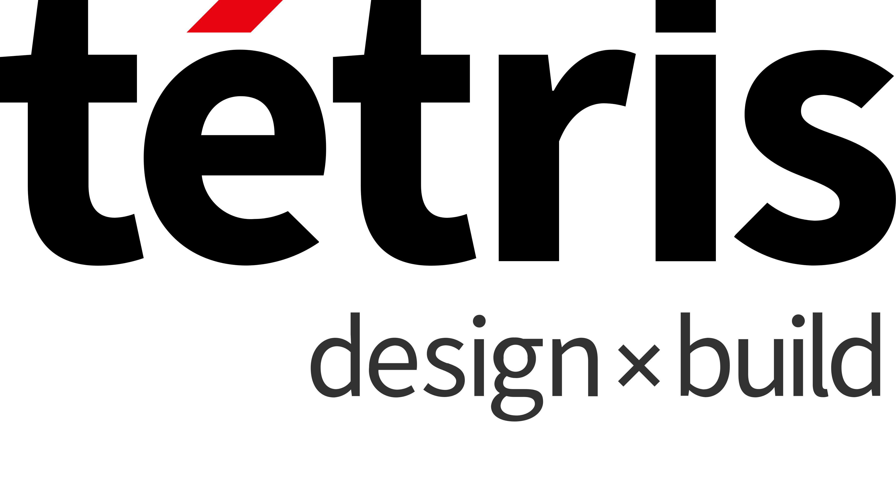

Experience
A concise timeline of leadership roles across commercial real estate, consulting, and telecommunications — focused on outcomes that matter to boards, delivery teams, and end users.
Career timeline
-

EMEA Digital Director
- Established a business-centric digital investment strategy following major restructuring, managing a multi-million-pound annual digital budget to strengthen governance and value.
- Architected strategic platform integration between tétris and JLL, unifying the enterprise information ecosystem across six core applications.
- Expanded BIM maturity, managing 1,500+ projects through digital workflows; positioned tétris as JLL’s global spearhead for digital design and construction.
- Partnered with business and technology teams on award-winning digital products, including a sustainability tool and a furniture re-use platform.
- Introduced generative AI capabilities across EMEA, including smart automated cost mapping and intelligent test-fit solutions.
- Secured alignment on a unified global technology roadmap with APAC and Americas for the newly created JLL Design practice.
-
Technology Business Partner
- Rebuilt trust in technology management and achieved full handover of technology portfolio management to the function.
- Rationalised a home-grown project management tool, cutting operational expenditure by around half while improving delivery quality through DevOps principles.
- Laid the foundation for enterprise-grade BI through data governance and quality initiatives.
- Drove enterprise-wide technology optimisation, redesigning hardware and licensing models to deliver six-figure savings with a better user experience.
-
Lead Project Manager & Business Analyst
- Led an ERP integration programme (PeopleSoft upgrade) and the complete delivery team.
- Established technology steering committee governance and strategic project prioritisation.
- Led redesign and rebuild of a significant share of application scope, enabling rollout to new Central European markets (200+ users).
-
Management & Technology Consultant
- Led cross-functional delivery teams of 30+ people across onshore and offshore locations; managed critical go-live criteria for major catalogue reconfigurations.
- Architected offer configuration processes for 2,000+ plans and 5,000+ options across complex product portfolios.
- Implemented gap-treatment processes that reduced open items from several hundred to fewer than ten.
- Delivered knowledge-transfer programmes across client teams and delivery centres in India.
- Orchestrated implementations across Siebel, OSM, and BRM (Oracle), supporting integration and business continuity.
-
Product Manager (trainee)
- Supported development of cloud solutions for the business market, coordinating cross-functional workshops and relationships with external integrators.